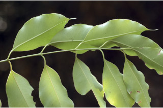
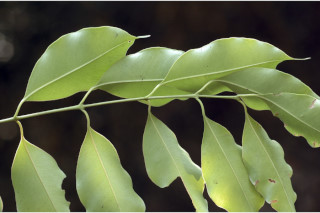
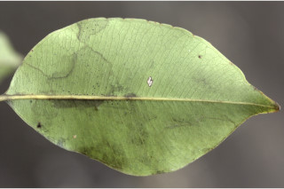
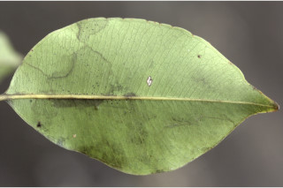
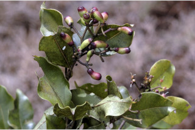
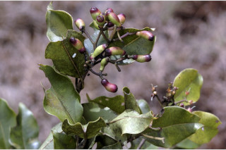

Large trees up to 15 m tall.
15 ಮೀ. ಎತ್ತರದವರೆಗೆ ಬೆಳೆಯುವ ದೊಡ್ಡ ಗಾತ್ರದ ಮರಗಳು.
Large trees up to 15 m tall.
பெரிய மரங்கள் 15 மீ. உயரம் வரை வளரக்கூடியது.
Bark grey, smooth.
ತೊಗಟೆ ಬೂದು ಬಣ್ಣದಲ್ಲಿರುತ್ತದೆ ಮತ್ತು ನಯವಾಗಿರುತ್ತದೆ.
Bark grey, smooth.
மரத்தின் பட்டை சாம்பல் நிறமானது, வழவழப்பானது.
Young branchlets subterete, glabrous.
ಎಳೆಯ ಕಿರುಕೊಂಬೆಗಳು ಉಪದುಂಡಾಗಿದ್ದು ರೋಮರಹಿತವಾಗಿರುತ್ತವೆ.
Young branchlets subterete, glabrous.
சிறியநுனிக்கிளைகள் குறுக்குவெட்டுத் தோற்றத்தில் வளையமானது, உரோமங்களற்றது.
Leaves simple, opposite, decussate; petiole 1-2.3 cm long, canaliculate, glabrous; lamina 4-8 x 2.5-3 cm, elliptic, apex acuminate to caudate, base acute to attenuate, margin entire, pellucid gland dotted, coriaceous, glabrous, olive green when dry; midrib canaliculate above; intramarginal nerve present; secondary_nerves many, parallel, slender; tertiary_nerves obscure to admedially ramified.
ಎಲೆಗಳು ಸರಳವಾಗಿದ್ದು ಅಭಿಮುಖವಾಗಿ ಜೋಡನೆಗೊಂಡಿದ್ದು ಕಾಂಡದ ಎರಡೂ ಕಡೆ ಎದುರು ಬದರಿನ ಲಂಬ ಸಾಲಿನಲ್ಲಿರುತ್ತವೆ; ತೊಟ್ಟುಗಳು 1 -2.3 ಸೆಂ.ಮೀ. ವರೆಗಿನ ಉದ್ದಹೊಂದಿದ್ದು ಕಾಲುವೆಗೆರೆ ಸಮೇತವಿರುತ್ತವೆ ಮತ್ತುರೋಮರಹಿತವಾಗಿರುತ್ತವೆ;ಪತ್ರಗಳು4 – 8 X 2.5 – 3 ಸೆಂ.ಮೀ.ವರೆಗಿನ ಗಾತ್ರವಿದ್ದು ಅಂಡವೃತ್ತದ ಆಕಾರ, ಕ್ರಮೇಣ ಚೂಪಾಗುವ ಮಾದರಿ ಬಾಲರೂಪಿ ಮಾದರಿವರೆಗಿನ ತುದಿ,ಚೂಪಾದುದರಿಂದ ಹಿಡಿದು ಒಳಬಾಗಿದ ಮಾದರಿವರೆಗಿನ ಬುಡ,ನಯವಾದ ಅಂಚು,ಪ್ರಕಾಶ ಭೇಧ್ಯ ರಸಗ್ರಂಥಿ ಚುಕ್ಕೆಗಳ ಸಮೇತವಿದ್ದು ತೊಗಲನ್ನೋಲುವ ಮೇಲ್ಮೈ ಹೊಂದಿರುತ್ತವೆ ಹಾಗೂ ಒಣಗಿದಾಗ ಆಲಿವ್ ಹಸಿರು ಬಣ್ಣದಲ್ಲಿರುತ್ತವೆ;ಮಧ್ಯ ನಾಳ ಪತ್ರದ ಮೇಲ್ಭಾಗದಲ್ಲಿ ಕಾಲುವೆಗೆರೆ ಸಮೇತವಿರುತ್ತದೆ; ಅಂಚಿನ ನಾಳಗಳು ಇರುತ್ತವೆ; ಎರಡನೇ ದರ್ಜೆಯ ನಾಳಗಳು ಅನೇಕವಿದ್ದು ಹತ್ತಿರವಾಗಿರುತ್ತವೆ ಹಾಗೂ ಸಮಾಂತರದಲ್ಲಿದ್ದು ತೆಳುವಾಗಿರುತ್ತವೆ ; ಮೂರನೇ ದರ್ಜೆಯ ನಾಳಗಳು ಅಸ್ಪಷ್ಟವಾಗಿರುವುದರಿಂದ ಹಿಡಿದು ಎಲೆಯ ಅಕ್ಷದ ಕಡೆಗೆ ಕವಲುಗೊಂಡಿರುವ ಮಾದರಿಯವುಗಳಾಗಿರುತ್ತವೆ.
Leaves simple, opposite, decussate; petiole 1-2.3 cm long, canaliculate, glabrous; lamina 4-8 x 2.5-3 cm, elliptic, apex acuminate to caudate, base acute to attenuate, margin entire, pellucid gland dotted, coriaceous, glabrous, olive green when dry; midrib canaliculate above; intramarginal nerve present; secondary_nerves many, parallel, slender; tertiary_nerves obscure to admedially ramified.
இலைகள் தனித்தவை, எதிரடுக்கமானவை, குறுக்குமறுக்கானவை; இலைக்காம்பு 1-2.3 செ.மீ. நீளமானது, குறுக்குவெட்டுத் தோற்றத்தில் கேனாலிகுலேட், உரோமங்களற்றது; இலை அலகு 4-8 x 2.5-3 செ.மீ., நீள்வட்ட வடிவானது, அலகின் நுனி அதிக்கூரியது முதல் வால் போன்றது, அலகின் தளம் கூரியது முதல் அட்டனுவேட், அலகின் விளிம்பு முழுமையானது, ஒளிபுகும் சுரப்பி புள்ளிகளுடையது, கோரியேசியஸ், உரோமங்களற்றது, உலரும் போது ஆலிவ் பச்சை நிறமானது; மையநரம்பு மேற்புறத்தில் அலகின் பரப்பைவிட பள்ளமானது; விளிம்பு நரம்பு (இண்ட்ராமார்ஜினல் நரம்பு) கொண்டது; இரண்டாம் நிலை நரம்புகள் எண்ணற்றவை, இணையானவை, மெல்லியது; மூன்றாம் நிலை நரம்புகள் கண்களுக்கு புலப்படாது முதல் ஆட்மீடியல்லி ராமிபைடு.
Inflorescence dense cymose umbellules, terminal; flowers white.
ಪುಷ್ಪಮಂಜರಿ ತುದಿಯಲ್ಲಿನ ಮಧ್ಯಾರಂಭಿ ಕಿರುಪೀಠಛತ್ರ ಮಾದರಿಯಲ್ಲಿರುತ್ತವೆ;ಹೂಗಳು ಬಿಳಿ ಬಣ್ಣದಲ್ಲಿರುತ್ತವೆ.
Inflorescence dense cymose umbellules, terminal; flowers white.
மஞ்சரி அடர்த்தியான சைம் போன்ற சிறு அம்பல், தண்டின் நுனியில் காணப்படும்; மலர்கள் வெள்ளை நிறமானது.
Berry oblong, crowned by persistent calyx, purple; seed one.
ಬೆರ್ರಿ ಫಲಗಳು ಚತುರಸ್ರದ ಆಕಾರದಲ್ಲಿದ್ದು ಮುಕುಟದಲ್ಲಿ ಶಾಶ್ವತವಾಗಿ ಉಳಿಯುವ ಪುಷ್ಪಪಾತ್ರೆಯ ಸಮೇತವಿರುತ್ತವೆ ಮತ್ತು ಕೆನ್ನೀಲಿ ಬಣ್ಣ ಹೊಂದಿರುತ್ತವೆ;ಬೀಜ ಒಂದು
Berry oblong, crowned by persistent calyx, purple; seed one.
முழுச்சதைகனி (பெர்ரி) நீள்சதுர வடிவானது, நிரந்தரமான புல்லி இதழ்களுடையவை, பர்புள்; ஒரு விதையுள்ள கனி.


 

 



 
